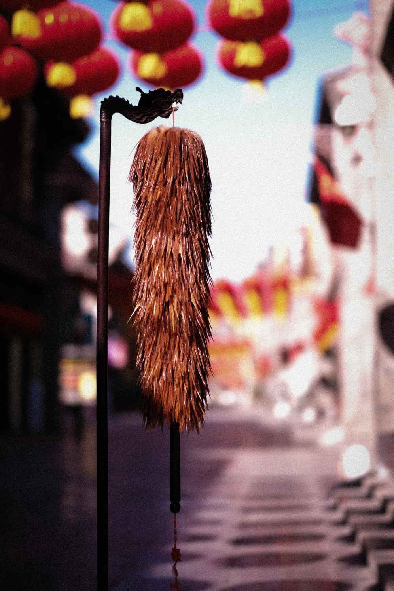
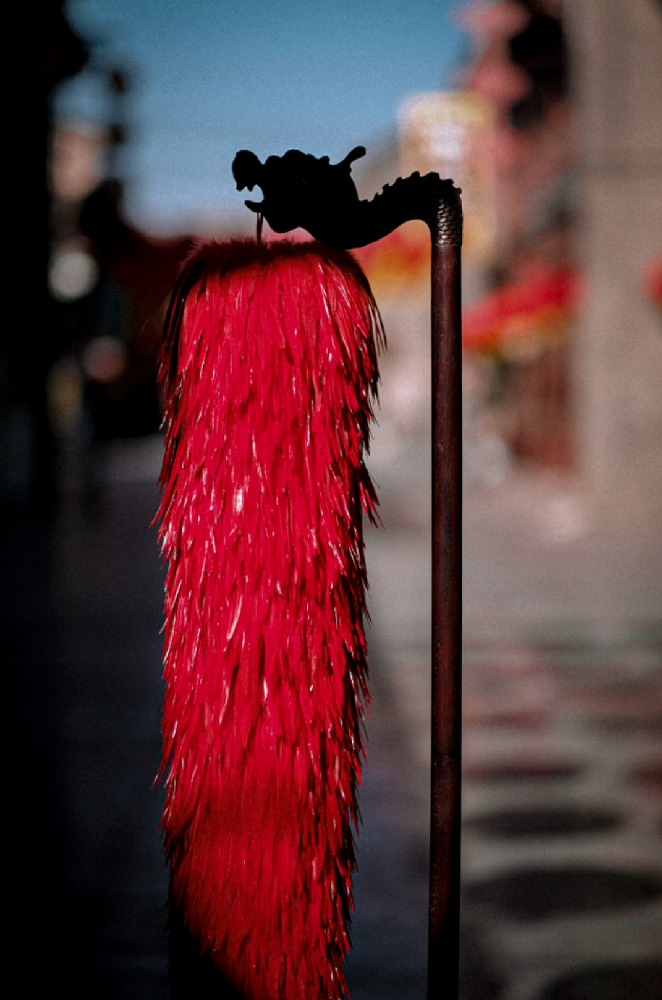
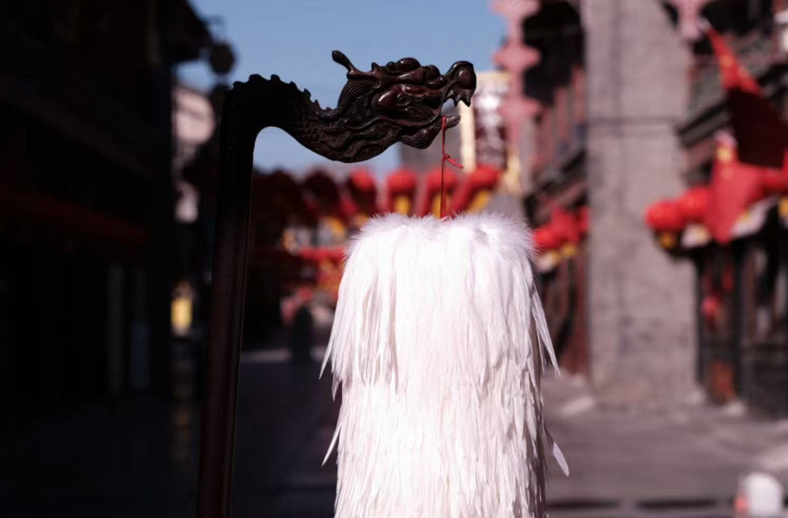
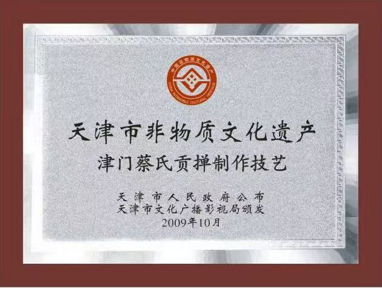

品牌传承 · BRAND HERITAGE
从北京黄村，到天津津门
蔡氏制掸技艺可追溯至清代。民国后期，蔡氏家族迁居天津，将手艺在此延续、经营与传播。由家传手艺到今日品牌，六代人的亲手传习从未脱离对材料与结构的判断。
关于 1884 年慈禧五十寿辰所制九十九把贡掸的故事，为蔡氏家族世代相传的记忆；“贡掸”之名也由此承载对精工、端正与华美形制的追求。
HANDCRAFT
轻柔的羽，严谨的骨
一把精品贡掸，从鸡尾、鸡背、鸡颈中择取适合制掸的优质羽毛，蔡家称之为“三把毛”。色泽、弧度、宽窄与韧性，都要在天然羽毛的差异中逐一判断、搭配。
18 TRADITIONAL STEPS
分拣、处理、穿线、洗水、理羽、分层、绑扎、成形、修整……历经十八道传统工序，使羽面饱满舒展、绑扎匀称坚实。蔡家以“宁折不散”概括对牢固程度的要求。



LIVING HERITAGE
可拂尘，亦可陈设与礼赠
它能轻柔清理字画、木器和室内摆件；置于案前与掸瓶之中，又显出羽色、层次与比例之美。在婚嫁、乔迁、开业与节庆等场景里，贡掸也寄托着平安、吉祥与辞旧迎新的生活愿望。

“津门蔡氏贡掸制作技艺”已于 2009 年 10 月 23 日列入天津市第二批市级非物质文化遗产名录，申报地区为南开区。